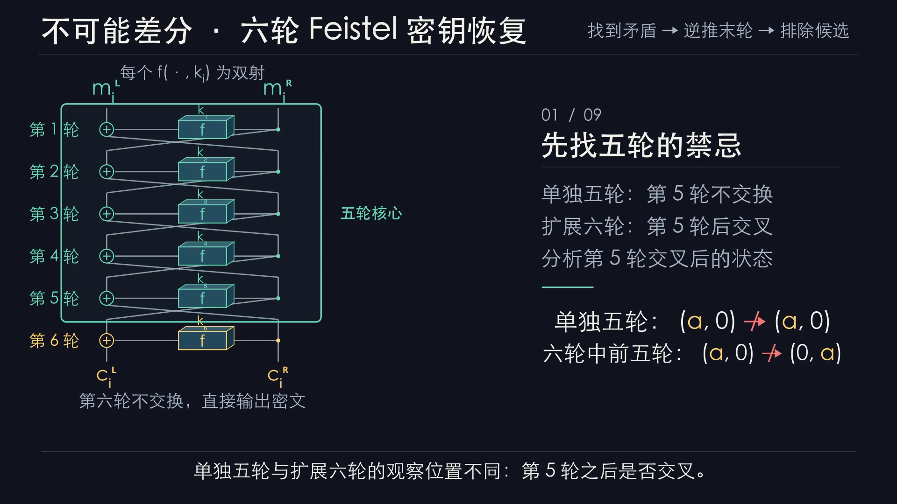

不可能差分分析¶
来源：
密码分析学 / notes/03-差分分析/不可能差分分析.md
六轮 Feistel 密钥恢复动画¶

动画先用正向两轮、反向三轮证明五轮不可能差分，再展示密文对预筛、猜测第六轮子密钥、逆推末轮和排除候选。数值示例给出了可复算的明密文对与被排除的错误子密钥。
核心：用“绝不发生”排除错误密钥¶
普通差分攻击寻找发生概率较高的输入—输出差分，并给与它相符的候选密钥计数。不可能差分分析寻找概率严格为零的差分：在规定的轮数、算法结构与密钥条件下，输入差分 \(\alpha\) 不可能产生输出差分 \(\beta\)，记为 \(\alpha\not\to\beta\)。
攻击时通常先在这个区分器的头部或尾部增加一轮，猜测少量子密钥。如果某个猜测把实际明密文对还原成了区分器所禁止的差分，这个猜测一定错误，可以直接删除。密钥恢复的判据就是这个可检验的矛盾。
如何构造：中间相错（Miss in the middle）¶
从输入差分正向传播，得到连接点处必然落入的集合 \(\mathcal A\)；从目标输出差分反向传播，得到同一连接点处必然落入的集合 \(\mathcal B\)。如果两段推导都以概率 \(1\) 成立，而
就不存在同时满足头尾条件的明密文对，因而得到不可能差分。

因为没有交集的话，肯定就没办法从左边走到右边了，所以是不可能差分
例子：五轮 Feistel 的不可能差分¶
课件采用左右半支各 \(b/2\) 比特、每轮函数 \(f_i(x)=f(x,k_i)\) 都是双射的 Feistel 结构。为明确左右顺序，先把轮内状态写为 \((L_i,R_i)\)，一轮定义为
设输入差分为 \((\alpha,0)\)，\(\alpha\ne0\)。正向走两轮，必得
假设五轮后的轮内状态差分为 \((0,\alpha)\)，从该状态反向走三轮，依次得到
两侧在第二轮边界相遇时，左半支必须既是 \(\alpha\) 又是 \(\alpha\oplus\delta\)，矛盾。因此轮内顺序下
课件中单独的五轮密码在第 5 轮不交换，故其输出端的禁忌差分写为 \((\alpha,0)\not\to(\alpha,0)\)。扩展为六轮时，第 5 轮变成中间轮，需要交叉换位；交叉后的差分为 \((0,\alpha)\)，正是第 6 轮的输入。第 6 轮不再交换，两条支路直接输出为密文。

\(f_i\) 的双射性保证非零输入差分对应非零输出差分，因此上述 \(\beta,\gamma,\delta\) 都非零。
每一步为什么成立？¶
由一轮定义，差分满足
第 1 轮 \(f_1\) 的输入差分是 0，因此输出差分也是 0，得到 \((0,\alpha)\)；第 2 轮 \(f_2\) 的输入差分为非零 \(\alpha\)，双射保证输出差分 \(\beta\ne0\)，所以得到 \((\alpha,\beta)\)。
反推使用
从假定的第 5 轮输出 \((0,\alpha)\) 反推：第 5 轮函数的输入差分为 0，得到第 4 轮状态 \((\alpha,0)\)；再反推第 4 轮，函数输入差分为 \(\alpha\)，输出记为非零 \(\gamma\)，得到第 3 轮状态 \((\gamma,\alpha)\)；继续反推第 3 轮，输入差分为 \(\gamma\)，输出记为非零 \(\delta\)，得到第 2 轮状态 \((\alpha\oplus\delta,\gamma)\)。
正推与反推说的是同一个第 2 轮状态：前者左支必须为 \(\alpha\)，后者左支必须为 \(\alpha\oplus\delta\)。由于 \(\delta\ne0\)，两者不相等，所以头尾差分不可能同时出现。
扩展一轮：六轮 Feistel 密钥恢复¶
按课件的结构，前五轮结束后都交叉，第六轮不交换，直接输出密文。用 \(m_i,m_j\) 表示明文对，用 \(c_i,c_j\) 表示对应密文对，用 \(f(x,k_6)\) 表示第六轮函数；猜测的子密钥仍记为 \(k_6\)。
为什么能排除密钥？¶
选择明文对，使
五轮内部路径不能将输入差分 \((\alpha,0)\) 传播为第六轮输入差分 \((0,\alpha)\)。猜测 \(k_6\) 并逆去末轮后，如果得到的第五轮末状态差分恰好是 \((0,\alpha)\)，就与这个禁忌差分矛盾，因而删除该候选值。正确的子密钥不会被删除；未删除的候选还需继续筛选、验证。

先筛选数据对¶
第六轮不交换。记进入第六轮的状态为 \((L_5,R_5)\)，其输出为
因此 \(R_{5,i}\oplus R_{5,j}=c_i^R\oplus c_j^R\) 与密钥无关。要逆推出禁忌差分 \((0,\alpha)\)，数据对必须满足
不满足该条件的明密文对直接丢弃；这一步筛选的是数据对，还没有删除密钥。
可以用选择明文结构体减少查询量：固定右半支 \(c\)，令左半支遍历全部 \(b/2\) 比特值，取 \(m_i=(i,c)\)。一个结构体包含 \(2^{b/2}\) 个明文、约 \(2^{b-1}\) 个无序对。预筛条件为 \(c_i^R\oplus c_j^R=i\oplus j\)，等价于 \(i\oplus c_i^R=j\oplus c_j^R\)，因此可按 \(i\oplus c_i^R\) 分组，再在组内配对。随机密文近似下，平均保留
再用“不可能”排除子密钥¶
对于通过预筛的每对密文，逐个猜测 \(k_6\)，逆去第六轮：
对 \(c_j\) 同理。预筛已经保证 \(\Delta R_5=\alpha\)；为了使 \(\Delta L_5=0\)，候选 \(k_6\) 必须满足
满足方程就删除该候选：此时逆推差分为 \((0,\alpha)\)，与前五轮的不可能差分矛盾。对更多数据对重复筛选，最后结合其余密钥用完整加密验证剩余候选。
与高概率差分计数的方向相反： 不可能差分删除满足禁忌方程的候选，其余候选继续参与后续检验。
课件的粗略复杂度模型¶
设第六轮待恢复子密钥有 \(k\) 比特，并假设一个过滤后的对能以约 \(2^{-b/2}\) 的概率排除任意错误候选。处理一个结构体后，错误候选的留存概率近似为
处理 \(s\) 个结构体后，剩余错误候选的期望个数约为 \((2^k-1)e^{-s/2}\)。令期望值小于 \(1\) 得到粗略条件 \(s>2k\ln2\approx1.39k\)。该阈值以近似独立模型下的期望剩余数为标准。数据量为约 \(s2^{b/2}\) 个选择明文，标记已删除候选需要约 \(2^k\) 个比特。
把留存概率拆开看： 一个筛后的对删除某个错误候选的概率是 \(2^{-b/2}\)，不删除的概率就是 \(1-2^{-b/2}\)；一个结构体有约 \(2^{b/2-1}\) 个这样的对，所以将不删除的概率连乘，就得到上面的 \(e^{-1/2}\approx0.607\)。重复 \(s\) 个结构体后约为 \((e^{-1/2})^s=e^{-s/2}\)；再乘初始 \(2^k-1\) 个错误候选，得到期望剩余数。这里是题设的随机化和近似独立模型；不同结构体要使用不同的固定右支，重复同一个结构体不会带来新信息。
例如 \(b/2=k=16\)，取 \(s=24\) 个结构体，错误候选期望约为 \((2^{16}-1)e^{-12}\approx0.403\)。即平均剩余约 0.403 个错误候选。
与直接穷举相比¶
课件第 26 页把每个保留消息对对一个候选所需的两次轮函数计算都计入，得到约
次轮函数计算。若一次六轮完整加密约等于六次轮函数计算，换算后约为 \(2^{k+b/2-1.24}\) 次完整加密。这个结果对 \(k\) 呈指数增长；额外的 \(2^{b/2}\) 因子来自每个结构体中要处理的大量消息对。
比较时要分清 \(k\) 与完整密钥长度 \(K\)：这里恢复的只是第六轮的 \(k\) 比特子密钥。如果这 \(k\) 位已经决定全部密钥，并且能直接验证，那么约 \(2^k\) 次的直接穷举更便宜。若要比较完整密钥恢复，则应把剩余密钥的求解成本也计入，再与约 \(2^K\) 次完整加密的穷举比较。特别当 \(K\approx k+b/2\) 时，上式只比 \(2^K\) 小一个常数因子，还需要约 \(1.39k\,2^{b/2}\) 个选择明文，此时主要收益是常数级的时间缩减。完整密钥恢复的比较基准为 \(2^K\) 次完整加密，同时列出数据和存储成本。
其他矛盾与自动搜索¶
除 Feistel 例子中的“两个不同的非零固定值”矛盾外，课件还讨论零与非零的矛盾，以及多个字节之间的关系矛盾。例如 AES 的列混合是分支数为 \(5\) 的线性变换：对非零输入列差分 \(a\)，有 \(W(a)+W(\mathrm{MC}(a))\ge5\)，其中 \(W\) 为非零字节数。因此若一侧确定输入仅有一个活跃字节，另一侧又要求输出少于四个活跃字节，就会形成结构性冲突。
自动搜索通常先定义轮运算和差分状态的表示，再分别枚举正向、反向的概率为 \(1\) 的传播，最后检测连接点处的集合是否相交。表示越粗，搜索越快，但也越容易把有用的矛盾合并掉；固定非零值、零值及跨字节约束应在需要时保留。
来源说明： 用户提供的文件名写作“第3.3节”，课件内标题写作“第3.4节 不可能差分分析”；上文页码均按 PDF 页数计算。相关笔记：差分攻击、截断差分、攻击思想。